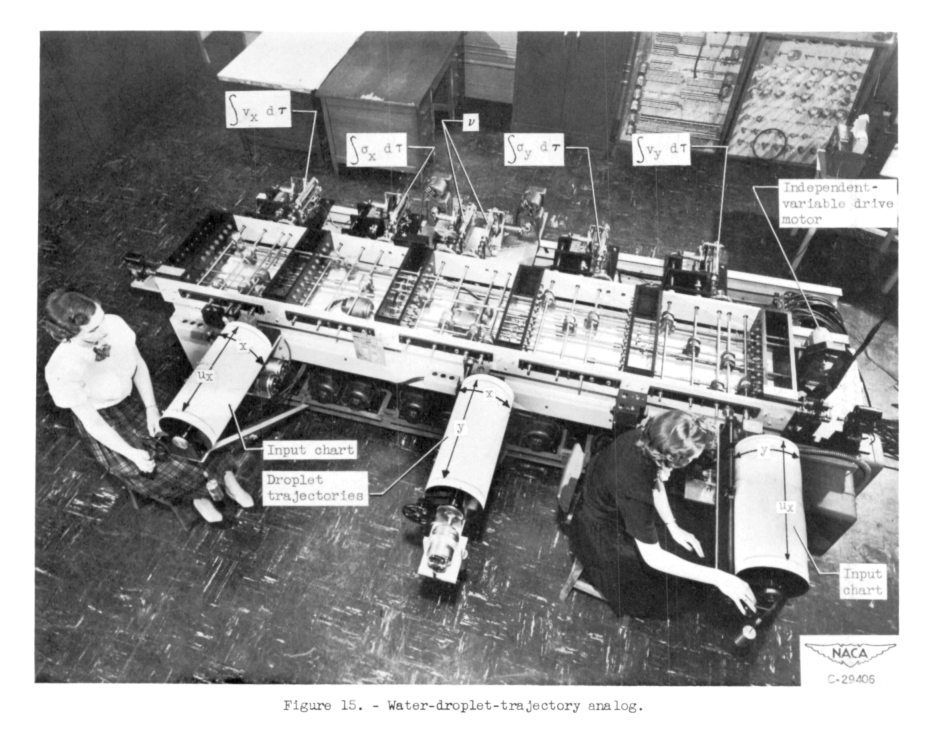
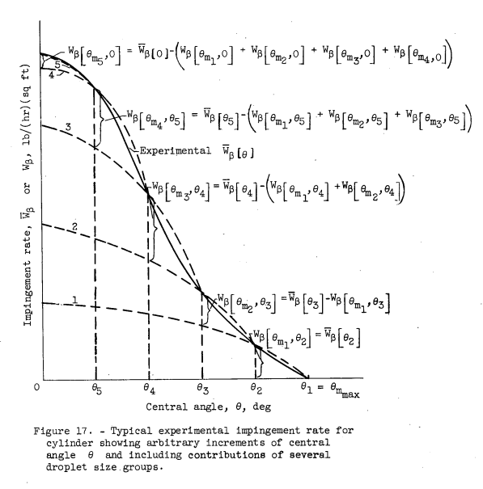

"... it is believed that a comparison of the water-drop impingement over several different airfoils ... is of interest"

Figure 5 from NACA-TN-1397
NACA-TN-1397, "A Method for Numerically Calculating the Area and Distribution of Water Impingement on the Leading Edge of an Airfoil in a Cloud." 1
NACA-TN-2476, "An Empirical Method Permitting Rapid Determination of the Area, Rate, and Distribution of Water-Drop Impingement on an Airfoil of Arbitrary Section at Subsonic Speeds." 2
NACA-RM-E52B12, "Impingement of Water Droplets on an NACA 651-212 Airfoil at an Angle of Attack of 4°." 3
Summary
Three publications detail water impingement calculations.
Key Points
- Impingement analysis methods are detailed.
- Data for several airfoils are presented.
- Methods to estimate impingement without the use of a differential analyzer are included.
- An instrument is not described, but the later NACA-TN-3338 does describe drop size distribution measurements.
Abstract
NACA-RM-E52B12 3
The trajectories of droplets in the air flowing past an NACA 651-212 airfoil at an angle of attack of 4° were determined. The collection efficiency, the area of droplet impingement, and the rate of droplet impingement were calculated from the trajectories and are presented herein to cover the following range of conditions:
Variable Minimum value Maximum value
Droplet diameter (microns) 5 100
Airplane speed. (mph) 150 Critical flight speed
Altitude (ft) 1000 35,000
Chord length (ft) 2 20
Discussion
Is this an instrument?
No.
These three publications discuss water drop impingement, without mentioning an instrument. One might wonder why these were included in the "Meteorological Instrument" section of The Historical Selected Bibliography of NACA-NASA Icing Publications, when there is also a large "Impingement of Cloud Droplets" section.
However, the later NACA-TN-3338 4 does describe measuring a drop size distribution based on the impingement rates on a cylinder, measured with the dye tracer method in a wind tunnel, and the method could be used for airfoils. While it was not developed in to a practical flight instrument, it is interesting.
I will honor Uwe von Glahn's categorizations, and review these publications in this "Meteorological Instruments" thread.
Low cost, approximate impingement values
A motivation for these three publications was that the use of a differential analyzer was expensive and time-consuming. The water drop equations of motion are included in all three, were solved using a differential analyzer (for more details see "Mathematical Investigation of Water Droplet Trajectories". However, the differential analyzer device was large, expensive, and labor-intensive to operate. A large entity (like General Electric) might own one, but they were also available for rent at a few locations.
It is hard to design an ice protection system without knowing how much water is hitting where on an airfoil.
the designer is therefore confronted with the desirability of employing a computation method, preferably without the necessity of a differential analyzer, which will provide some indication of the area and distribution of water impingement.
These three publications provide numerous tables, graphs, and an "equivalent cylinder" method to obtain approximate impingement values without the use of a differential analyzer.
Airfoils
NACA-TN-1397 1:
12—percent—thick symmetrical Joukowski profile chosen to simulate an NACA 0012 section.
NACA-TN-2476 2:
The five airfoil cases selected for the water-drop-trajectory investigation are listed in the following table:
["Do" is apparently short for "ditto", or "same as above".]

An advantage of the Joukowski airfoils for analysis was that the flow solution for a cylinder (an analytic function, for incompressible, inviscid flow) can be mapped onto a Joukowski airfoil section. [We might go into more detail on that in a post in the distant future.]
NACA-RM-E52B12:
As stated in the abstract above, a NACA 651-212
airfoil at an angle of attack of 4° was analyzed over a broad range of conditions.
The NACA 65-series airfoil sections are particularly adaptable to airplanes having high-level flight speeds. An airfoil 12 percent thick was chosen as adaptable to transport and cargo airplanes. An angle of attack of 4° was chosen as being representative of low cruise attitude for a turbojet-powered aircraft operated under conditions giving a relatively large area of droplet impingement on the airfoil.
NACA-TN-1397 "equivalent" cylinder analysis
The designer of a heated wing, desiring to know the rate and area of water impingement on the leading edge in a specified cloud at a given flight speed, might assume that the impingement limit be identical to that for a cylinder with a radius equal to the wing leading-edge radius. There is some question, however, as to the accuracy of this assumption for the larger drop sizes and for wing sections with small leading-edge radii. The designer is therefore confronted with the desirability of employing a computation method, preferably without the necessity of a differential analyzer, which will provide some indication of the area and. distribution of water impingement.
In this report, the water-drop trajectory equations used in reference 3 have been modified to establish a step-by-step integration method applicable to any two-dimensional flow for which the streamline velocity components are known or can be approximated. If drop trajectories for a large range of airspeeds and drop diameters are required, the computation time is large, arid the desirability of access to a differential analyzer becomes evident. The integration method presented herein, however, does permit the calculation of any desired number of trajectories without resort to an analyzer; and it also provides a means for estimating the error which will be incurred by replacing the airfoil by a cylinder with a radius equal to the leading-edge radius of the airfoil. In addition, water-impingement data over the entire airfoil surface can be obtained by the integration method. ...With the set of trajectories calculated by the step—by—step process and presented in figure 6, a comparison can be made between the impingement of water drops on the Joukowski airfoil and its equivalent cylinder, for a small range in drop sizes. Such a comparison is made in figure 10, where the airfoil was used as the basis for comparison. For area of impingement, the equivalent cylinder can be used without much error to a drop—size diameter of approximately 20 microns. However, for rate of impingement, appreciable difference is not encountered until drop diameters are above 3O microns. It is of interest to note that meteorological data obtained in flight (reference 5) indicate a mean-effective drop-size diameter 2 for cumulus clouds of 15 to 25 microns. Furthermore, mean-effective drop diameters as high as 50 microns have been measured in clouds of the altostratus category. Since, in accordance with the definition of mean-effective drop diameter, half the water contained in a cloud sample is composed of drops larger than the mean-effective diameter, it is apparent that the use of an equivalent cylinder may be subject to considerable error when applied to typical icing conditions in which large drop-size diameters have been observed.

Figure 6 from NACA-TN-1397

Figure 10 from NACA-TN-1397
The "Conclusions" state:
2. The rate and area of water-drop impingement on an NACA 0012
airfoil having an 8-foot chord is approximated with reasonable
accuracy by the impingement on a cylinder of radius equal to the
leading-edge radius of the airfoil for only drop diameters below 20
microns at speeds of about 200 miles per hour and at an altitude of
7000 feet.
NACA-TN-2476
NACA-TN-2476 is long (152 pages), and complex (it cites 38 publications). Frankly, only the most dedicated students of impingement analysis history will read it all, and today one is unlikely to use the methods detailed therein.
See if you can wrap your thoughts around the "hodographs" presented.

Figure 19 from NACA-TN-2476
Mechanical Analog
NACA-RM-E52B12 mentions a "mechanical analog" used to solve the water drop equations of motion.
METHOD OF SOLUTION
The differential equations of motion (equation (i)) are difficult to solve by ordinary means because the values of the velocity components of the air and the term containing the coefficient of drag are not known until the trajectory is traced. These values are determined as the trajectory of a droplet is developed because the magnitudes depend on the position of the droplet in the flow field. Simultaneous solutions for the two equations were obtained with the use of a mechanical analog constructed at the Lewis laboratory for this purpose. The answers were obtained in the form of plots of the droplet trajectories with respect to the airfoil. The coefficient of drag CD for the droplets, required in equations (1), was obtained from tables in references 2 and 3.
NACA-TN-2904 tell us more about the mechanical analog:
The water droplet trajectories were computed on a mechanical analog which was fundamentally a differential analyzer constructed for solving the equations of motion (equations (1) and (2)).

Figure 15 of NACA-TN-2904
Conclusions
Impingement Analysis
The "Impingement of Cloud Droplets" section of The Historical Selected Bibliography of NACA-NASA Icing Publications, has 25 publications, so I will defer a detailed discussion to a future topic thread.
There was a lot of analysis and some tests conducted to determine impingement rates, and the methods mentioned above were used to estimate approximate impingement rates without having to run an expensive analysis.
Today, one is likely to use analysis methods such as LEWICE 5 to perform comparable impingement analysis.
Inferring a drop size distribution
In the conclusions of NACA-TN-1397, it was stated:
4. The area and distribution of water-drop impingement on an
airfoil in motion through a cloud of known drop-size distribution can
be obtained by calculating the area and distribution of impingement
for each drop-size range present.
This procedure can be reversed, as detailed in NACA-TN-3338 4, to determine a drop size distribution, if one has measured impingement data. To briefly outline, a drop size distribution is assumed, and the impingement for the largest drop size bin calculated. This is compared to the measured impingement rate for the area near the impingement limits to calculate the fraction of total water in that drop size bin. This is then repeated for each size bin.

Figure 17 of NACA-TN-3338
This method saw limited use for tunnel tests, and was not well-suited to use in natural icing, as a calibrated amount of dye was needed to be mixed into the impinging water drops.
NACA-TN-4035 6 discusses building an airfoil impingement instrument, but did not test one.
The replacement of cylinders by a Joukowski airfoil for measuring instruments is required only when the airflow around the cylinder is not comparable to the theoretical flow used in the calculations of reference 1. The 36.5-percent-thick Joukowski airfoil retains many of the desirable properties of the cylinder and has the necessary flow field that permits the application of calculated results in a range of operating conditions not possible with cylinders. The least desirable feature of the airfoil is that the shape changes as ice accumulates on the surface. This feature is of no consequence when the airfoil is used with the dye-tracer technique in tunnels.
Citations
NACA-TN-1397 cites six publications.
- Kantrowitz, Arthur: Aerodynamic Heating and the Deflection of Drops by an Obstacle in an Air Stream in Relation to Aircraft Icing. NACA-TN-779, 1940.
- Glauert, Muriel: A Method of Constructing the Paths of Raindrops of Different Diameters Moving in the Neighbourhood of (1) a Circular Cylinder, (2) an Aerofoil, Placed in a Uniform Stream of Air; and a Determination of the Rate of Deposit of the Drops on the Surface and the Percentage of Drops Caught. R. & M. No. 2025, British A.R.C., 1940.
- Langmuir, Irving, and Blodgett, Katherine B.: A Mathematical Investigation of Water Droplet Trajectories. Tech. Rep. No. 5418, Air Materiel Command, AAF, Feb. 19, 1946. (Contract No. W-33-038-ac-9151 with General Electric Co.)
- Glauert, H.: The Elements of Aerofoil and Airscrew Theory. The Univ. Press (Cambridge), 1926.
- Lewis, William: A Flight Investigation of the Meteorological Conditions Conducive to the Formation of Ice on Airplanes. NACA-TN-1393, 1947.
- Pierce, B. 0 : A Short Table of Integrals. Ginn and Company, 1929.
NACA-TN-1397 is cited by 13 publications in the NACA Icing Publication Database 7.
- Neel, Carr B., Jr., Bergrun, Norman R., Jukoff, David, and Schlaff, Bernard A.: The Calculation of the Heat Required for Wing Thermal Ice Prevention in Specified Icing Conditions. NACA-TN-1472, 1947.
- Guibert, A. G., Janssen, E., and Robbins, W. M.: Determination of Rate, Area, and Distribution of Impingement of Waterdrops on Various Airfoils from Trajectories Obtained on the Differential Analyzer. NACA-RM-9A05, 1949.
- Bergrun, Norman R.: An Empirical Method Permitting Rapid Determination of the Area, Rate, and Distribution of Water-Drop Impingement on an Airfoil of Arbitrary Section at Subsonic Speeds. NACA-TN-2476, 1951.
- von Glahn, Uwe H., Callaghan, Edmund E., and Gray, Vernon H.: NACA Investigations of Icing-Protection Systems for Turbojet-Engine Installations. NACA-RM-E51B12, 1951.
- Bergrun, Norman R.: An Empirically Derived Basis for Calculating the Area, Rate, and Distribution of Water-Drop Impingement on Airfoils. NACA-TR-1107, 1952.
- Brun, Rinaldo J., Gallagher, Helen M., and Vogt, Dorothea E.: Impingement of Water Droplets on NACA 651-208 and 651-212 Airfoils at 4° Angle of Attack. NACA-TN-2952, 1953.
- Brun, Rinaldo J., and Mergler, Harry W.: Impingement of Water Droplets on a Cylinder in an Incompressible Flow Field and Evaluation of Rotating Multicylinder Method for Measurement of Droplet-Size Distribution, Volume-Median Droplet Size, and Liquid-Water Content in Clouds. NACA-TN-2904, 1953.
- Brun, Rinaldo J., Serafini, John S., and Gallagher, Helen M.: Impingement of Cloud Droplets on Aerodynamic Bodies as Affected by Compressibility of Air Flow Around the Body. NACA-TN-2903, 1953.
- Lowell, Herman H.: Maximum Evaporation Rates of Water Droplets Approaching Obstacles the Atmosphere under Icing Conditions. NACA-TN-3024, 1953
- Serafini, John S.: Impingement of Water Droplets on Wedges and Double- Wedge Airfoils at Supersonic Speeds. NACA-TR-1159, 1954. (Supersedes NACA-TN-2971.)
- Brun, Rinaldo J., Lewis, William, Perkins, Porter J., and Serafini, John S.: Impingement of Cloud Droplets and Procedure for Measuring Liquid-Water Content and Droplet Sizes in Supercooled Clouds by Rotating Multicylinder Method. NACA-TR-1215, 1955. (Supersedes NACA TN’s 2903, 2904, and NACA-RM-E53D23)
- Perkins, Porter J.: Statistical Survey of Icing Data Measured on Scheduled Airline Flights over the United States and Canada from November 1951 to June 1952. NACA-RM-E55F28a, 1955.
- von Glahn, Uwe H., Gelder, Thomas F., and Smyers, William H., Jr.: A Dye-Tracer Technique for Experimentally Obtaining Impingement Characteristics of Arbitrary Bodies and a Method for Determining Droplet Size Distribution. NACA-TN-3338, 1955.
An online search found NACA-TN-1397 cited 38 times. 8
NACA-TN-2476 cites nine publications.
- Neel, Carr B., Jr., Bergrun, Norman R., Jukoff, David, and Schlaff, Bernard A.: The Calculation of the Heat Required for Wing Thermal Ice Prevention in Specified Icing Conditions. NACA-TN-1472, 1947.
- Patterson, D. M.: A Simplified Procedure for the Determination of Heat Requirements for ice Protection of Fixed Areas of Aircraft. Central Air Documents Office, Technical Data Digest, vol. 14, no, 4, February 15, 1944, pp. 15-23.
- Bergrun, Norman R.: A Method for Numerically Calculating the Area and Distribution of Water Impingement on the Leading Edge of an Airfoil in a Cloud. NACA-TN-1397, 1947.
- Neel, Carr B., Jr.: Calculation of Heat Required for Wing Thermal Ice Prevention in Specified Icing Conditions. S. A. E. Quarterly Transactions, vol. 2, no. 3, July 1948, pp. 369-378.
- Guibert, A. G., Janssen, E., and Robbins, W. M.: Determination of Rate, Area, and Distribution of Impingement of Waterdrops on Various Airfoils from Trajectories Obtained on the Differential Analyzer. NACA-RM-9A05, 1949.
- Langmuir, Irving, and Blodgett, Katherine B.: A Mathematical Investigation of Water Droplet Trajectories. Tech. Rep. No. 5418, Air Materiel Command, AAF, Feb. 19, 1946. (Contract No. W-33-038-ac-9151 with General Electric Co.)
- Glauert, Muriel: A Method of Constructing the Paths of Raindrops of Different Diameters Moving in the Neighbourhood of (1) a Circular Cylinder, (2) an Aerofoil, Placed in a Uniform Stream of Air; and a Determination of the Rate of Deposit of the Drops on the Surface and the Percentage of Drops Caught. R. & M. No. 2025, British A.R.C., 1940.
- Stack, John: Compressible Flows in Aeronautics. Jour. Aero. Sci., vol. 12, no.2, April 1945, pp. 127-148.
- Allen, H. J., and Nitzberg, Gerald E.: The Effect of Compressibility on the Growth of the Laminar Boundary Layer on Low-Drag Wings and Bodies. NACA-TN-1255, 1947.
NACA-TN-2476 is cited by 10 publications in the NACA Icing Publication Database 7.
- Bergrun, Norman R.: An Empirically Derived Basis for Calculating the Area, Rate, and Distribution of Water-Drop Impingement on Airfoils. NACA-TR-1107, 1952.
- Lewis, William, and Bergrun, Norman R.: A Probability Analysis of the Meteorological Factors Conducive to Aircraft Icing in the United States. NACA-TN-2738, 1952.
- Neel, Carr B., Jr.: An Investigation Utilizing an Electrical Analogue of Cyclic De-Icing of a Hollow Steel Propeller with an External Blade Shoe. NACA-TN-2852, 1952.
- Brun, Rinaldo J., Gallagher, Helen M., and Vogt, Dorothea E.: Impingement of Water Droplets on NACA 651-208 and 651-212 Airfoils at 4° Angle of Attack. NACA-TN-2952, 1953.
- Brun, Rinaldo J., and Mergler, Harry W.: Impingement of Water Droplets on a Cylinder in an Incompressible Flow Field and Evaluation of Rotating Multicylinder Method for Measurement of Droplet-Size Distribution, Volume-Median Droplet Size, and Liquid-Water Content in Clouds. NACA-TN-2904, 1953.
- Dorsch, Robert G., and Brun, Rinaldo J.: A Method for Determining Cloud-Droplet Impingement on Swept Wings. NACA-TN-2931, 1953.
- Neel, Carr B., Jr.: An Investigation Utilizing an Electrical Analogue of Cyclic De-Icing of a Hollow Steel Propeller with Internal Electric Heaters. NACA-TN-3025, 1953.
- von Glahn, Uwe H., Gelder, Thomas F., and Smyers, William H., Jr.: A Dye-Tracer Technique for Experimentally Obtaining Impingement Characteristics of Arbitrary Bodies and a Method for Determining Droplet Size Distribution. NACA-TN-3338, 1955.
- Gelder, Thomas F., Smyers, William H., Jr., and von Glahn, Uwe H.: Experimental Droplet Impingement on Several Two-Dimensional Airfoils with Thickness Ratios of 6 to 16 Percent. NACA-TN-3839, 1956.
- Gelder, Thomas F.: Droplet Impingement and Ingestion by Supersonic Nose Inlet in Subsonic Tunnel Conditions. NACA-TN-4268, 1958.
An online search found NACA-TN-2476 cited 25 times. 9
NACA-RM-E52B12 cites 38 publications
- Sanders, Newell D., and Behun, Michael: Generalization of Turbojet- Engine Performance in Terms of Pumping Characteristics. NACA-TN-1927, 1949.
- Acker, Loren W.: Preliminary Results of Natural Icing of an Axial-Flow Turbojet Engine. NACA-RM-E8C18, 1948.
- Acker, Loren W.: Natural Icing of an Axial-Flow Turbojet Engine in Flight for a Single Icing Condition. NACA-RM-E8FO1a, 1948.
- Acker, Loren W., and Kleinknecht, Kenneth S.: Effects of Inlet Icing on Performance of Axial-Flow Turbojet Engine in Natural Icing Conditions. NACA-RM-E5OC15, 1950.
- Fleming, William A., and Saari, Martin J.: Inlet Icing and Effectiveness of Hot-Gas Bleedback for Ice Protection of Turbojet Engine. NACA-RM-E8J25c, 1948.
- Jones, Alun R., and Lewis, William: Recommended Values of Meteorological Factors to be Considered in the Design of Aircraft Ice-Prevention Equipment. NACA-TN-1855, 1949.
- von Glahn, Uwe H., and Blatz, Robert E.: Investigation of Aerodynamic and Icing Characteristics of Water-Inertia-Separation Inlets for Turbojet Engines. NACA-RM-E50E03, 1950.
- Gray, Vernon H., and Bowden, Dean T.: Icing Characteristics and Anti-Icing Heat Requirements for Hollow and Internally Modified Gas-Heated Inlet Guide Vanes. NACA-RM-E50I08, 1950.
- Neel, Carr B., Jr., Bergrun, Norman R., Jukoff, David, and Schlaff, Bernard A.: The Calculation of the Heat Required for Wing Thermal Ice Prevention in Specified Icing Conditions. NACA-TN-1472, 1947.
- Gray, Vernon H., and Campbell, B. G.: A Method for Estimating Heat Requirements for Ice Prevention on Gas-Heated Hollow Propeller Blades. NACA-TN-1494, 1947.
- Frick, Charles W., Jr., and McCullough, George B.: A Method for Determining the Rate of Heat Transfer from a Wing or Streamline Body. NACA-WR-A-40, Dec. 1942.
- Scherrer, Richard: The Effects of Aerodynamic Heating and Heat Transfer on the Surface Temperature of a Body of Revolution in Steady Supersonic Flight. NACA-TR-917, 1948. (Formerly NACA-TN-1300.)
- Boelter, L. M. K., Grossman, L. M., Martinelli, R. C., and Morrin, E. H.: An Investigation of Aircraft Heaters, Part XIX - Comparison of Several Methods of Calculating Heat Losses from Airfoils. NACA-TN-1453, University of California, 1947.
- Johnson, H. A., and Rubesin, M. W.: Aerodynamic Heating and Convective Heat Transfer - Summary of Literature Survey. Trans. ASME, vol. 71, no. 5, July 1949, pp. 447-456.
- Brown, W. Byron, and Donoughe, Patrick L.: Extension of Boundary-Layer Heat-Transfer Theory to Cooled Turbine Blades. NACA-RM-E50F02, 1950.
- Jakob, Max: Heat Transfer. Vol. I. John Wiley & Sons, Inc., 1949.
- Gray, Vernon H.: Improvements in Heat Transfer for Anti-Icing of Gas-Heated Airfoils with Internal Fins and Partitions. NACA-TN-2126, 1950.
- Loiziansky, L., and Schwab, V.: The Thermal Scale of Turbulence. Rep. No. 239, CARl, 1935. (In Russian.)
- Drexel, Roger E., and McAdams, William H.: Heat-Transfer Coefficients for Air Flowing in Round Tubes, In Rectangular Ducts, and around Finned Cylinders. NACA-ARR-4F28, 1945.
- Boelter, L. M. K., Young, George, and Iversen, H. W.: An Investigation of Aircraft Heaters, XXVII - Distribution of Heat- Transfer Rate in the Entrance Section of a Circular Tube. NACA-TN-1451, 1948.
- Lowdermilk, Warren H., and Grele, Milton D.: Influence of Tube-Entrance Configuration on Average Heat-Transfer Coefficients and Friction Factors for Air Flowing in an Inconel Tube. NACA-RM-E50E23, 1950.
- Bergrun, Norman R.: A Method for Numerically Calculating the Area and Distribution of Water Impingement on the Leading Edge of an Airfoil in a Cloud. NACA-TN-1397, 1947.
- Guibert, A. G., Janssen, E., and Robbins, W. M.: Determination of Rate, Area, and Distribution of Impingement of Waterdrops on Various Airfoils from Trajectories Obtained on the Differential Analyzer. NACA-RM-9A05, 1949.
- Stickley, A. R.: Some Remarks on the Physical Aspects of the Aircraft Icing Problem. Jour. Aero. Sci., vol. 5, no. 11, Sept. 1938, pp. 442-446.
- Langmuir, Irving, and Blodgett, Katherine B.: A Mathematical Investigation of Water Droplet Trajectories. Tech. Rep. No. 5418, Air Materiel Command, AAF, Feb. 19, 1946. (Contract No. W-33-038-ac-9151 with General Electric Co.)
- von Glahn, Uwe H., and Blatz, Robert E.: Investigation of Power Requirements for Ice Prevention and Cyclical De-Icing of Inlet Guide Vanes with Internal Electric Heaters. NACA-RM-E50H29, Dec. 1950.
- Hensley, Reece V., Rom, Frank E., and Koutz, Stanley L.: Effect of Heat and Power Extraction on Turbojet-Engine Performance, I - Analytical Method of Performance Evaluation with Compressor-Outlet Air Bleed. NACA-TN-2053, 1950.
- Koutz, Stanley L., Hensley, Reece V., and Rom, Frank E.: Effect of Heat and Power Extraction of Turbojet-Engine Performance, III - Analytical Determination of Effects of Shaft-Power Extraction. NACA-TN-2202, 1950.
- Dallas, Thomas, and Ellisman, Carl: Analysis and Preliminary Investigation of Eddy-Current Heating for Icing Protection of Axial-Flow-Compressor Blades. NACA-RM-E9EO6, 1949.
- Callaghan, Edmund E., and Ruggeri, Robert S.: Investigation of the Penetration of an Air Jet Directed Perpendicularly to an Air Stream. NACA-TN-1615, 1948.
- Callaghan, Edmund E., Ruggeri, Robert S., and Krebs, Richard P.: Experimental Investigation of the Hot-Gas Bleedback for Ice Protection of Turbojet Engines, I - Nacelle with Offset Air Inlet. NACA-RM-E8D13, 1948.
- Callaghan, Edmund E., and Ruggeri, Robert S.: Experimental Investigation of Hot-Gas Bleedback for Ice Protection of Turbojet Engines, II - Nacelle with Long Straight Air Inlet. NACA-RM-E9C16, 1949.
- Ruggeri, Robert S., and Callaghan, Edmund E.: Experimental Investigation of Hot-Gas Bleedback for Ice Protection of Turbojet Engines, III - Nacelle with Short Straight Air Inlet. NACA-RM-E9E12, 1949.
- Callaghan, Edmund E., and Bowden, Dean T.: Investigation of Flow Coefficient of Circular, Square, and Elliptical Orifices at High Pressure Ratios. NACA-TN-1947, 1949.
- Ruggeri, Robert S., Callaghan, Edmund E., and Bowden, Dean T.: Penetration of Air Jets Issuing from Circular, Square, and Elliptical Orifices Directed Perpendicularly to an Air Stream. NACA-TN-2019, 1950.
- von Glahn, Uwe H.: Ice Protection of Turbojet Engines by Inertia Separation of Water, I - Alternate-Duct System. NACA-RM-E8A27, 1948.
- von Glahn, Uwe H.: Ice Protection of Turbojet Engines by Inertia Separation of Water, III - Annular Submerged Inlets. NACA-RM-E8A29, 1948.
- Ruggeri, Robert S., von Glahn, Uwe H., and Rollin, Vern G.: Investigation of Aerodynamic and Icing Characteristics of Recessed Fuel-Vent Configurations. NACA-TN-1789, 1949.
NACA-RM-E52B12 is cited by 9 publications in the NACA Icing Publication Database 7
- Brun, Rinaldo J., Gallagher, Helen M., and Vogt, Dorothea E.: Impingement of Water Droplets on NACA 651-208 and 651-212 Airfoils at 4° Angle of Attack. NACA-TN-2952, 1953.
- Brun, Rinaldo J., and Mergler, Harry W.: Impingement of Water Droplets on a Cylinder in an Incompressible Flow Field and Evaluation of Rotating Multicylinder Method for Measurement of Droplet-Size Distribution, Volume-Median Droplet Size, and Liquid-Water Content in Clouds. NACA-TN-2904, 1953.
- Brun, Rinaldo J., Serafini, John S., and Gallagher, Helen M.: Impingement of Cloud Droplets on Aerodynamic Bodies as Affected by Compressibility of Air Flow Around the Body. NACA-TN-2903, 1953.
- Dorsch, Robert G., and Brun, Rinaldo J.: A Method for Determining Cloud-Droplet Impingement on Swept Wings. NACA-TN-2931, 1953.
- Hacker, Paul T., Brun, Rinaldo J., and Boyd, Bemrose: Impingement of Droplets in 90° Elbows with Potential Flow. NACA-TN-2999, 1953.
- Serafini, John S.: Impingement of Water Droplets on Wedges and Double- Wedge Airfoils at Supersonic Speeds. NACA-TR-1159, 1954. (Supersedes NACA-TN-2971.)
- Gelder, Thomas F., Smyers, William H., Jr., and von Glahn, Uwe H.: Experimental Droplet Impingement on Several Two-Dimensional Airfoils with Thickness Ratios of 6 to 16 Percent. NACA-TN-3839, 1956.
- Hacker, Paul T., Saper, Paul G., and Kadow, Charles F.: Impingement of Droplets in 60° Elbows with Potential Flow. NACA-TN-3770, 1956.
- Gelder, Thomas F.: Droplet Impingement and Ingestion by Supersonic Nose Inlet in Subsonic Tunnel Conditions. NACA-TN-4268, 1958.
An online search found NACA-RM-E52B12 cited 3 times. 10
Notes
-
Bergrun, Norman R.: A Method for Numerically Calculating the Area and Distribution of Water Impingement on the Leading Edge of an Airfoil in a Cloud. NACA-TN-1397, 1947 ntrs.nasa.gov. ↩↩
-
Bergrun, Norman R.: An Empirical Method Permitting Rapid Determination of the Area, Rate, and Distribution of Water-Drop Impingement on an Airfoil of Arbitrary Section at Subsonic Speeds. NACA-TN-2476, 1951 ntrs.nasa.gov. ↩↩
-
Brun, Rinaldo J., Serafini, John S., and Moshos, George J.: Impingement of Water Droplets on an NACA 651-212 Airfoil at an Angle of Attack of 4°. NACA-RM-E52B12, 1952 ntrs.nasa.gov. ↩↩
-
von Glahn, Uwe H., Gelder, Thomas F., and Smyers, William H., Jr.: A Dye-Tracer Technique for Experimentally Obtaining Impingement Characteristics of Arbitrary Bodies and a Method for Determining Droplet Size Distribution. NACA-TN-3338, 1955. ↩↩
-
Brun, Rinaldo J., and Vogt, Dorothea E.: Impingement of Cloud Droplets on 36_5-Percent-Thick Joukowski Airfoil at Zero Angle of Attack and Discussion of Use as Cloud Measuring Instrument in Dye-Tracer Technique. NACA-TN-4035, 1957. ↩